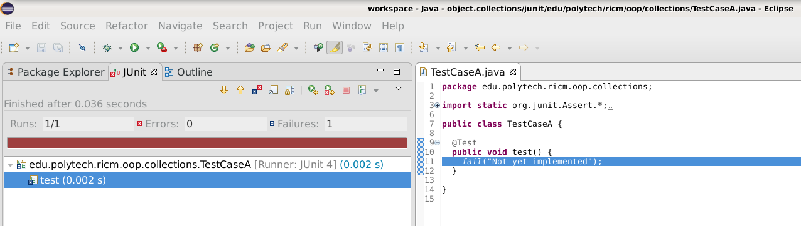
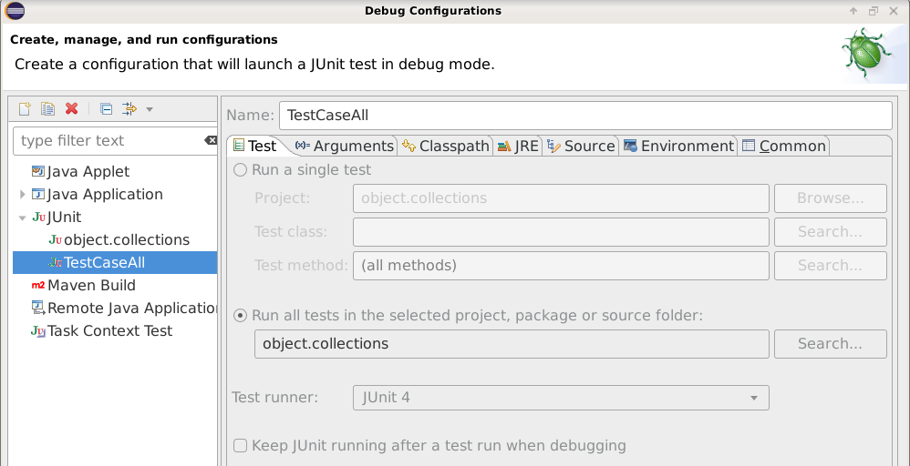

Since we want to keep and use our collections, we want to start
some unit testing. For Java, there is a nice framework for helping
writing unit tests and running them, it is called JUnit.
JUnit is useful for several reasons.
First, it gives you a simple framework to structure your tests.
Second, it gives you the ability to run all your tests easily and
get a report of what is running and what is not.
Third, it is nicely integrated in Eclipse, so it is really easy
to use.
Have a look at these online ressources, the JUnit4 website and the Eclipse JUnit Get Started.
In Eclipse, adding JUnit to a Java project is really simple. Go back to the project properties, select the Java Build Patch and select the Libraries tab. Click on the Add Library button and select JUnit. That's it, couldn't be easier, right?
Now, right-click on the project, select Debug As or Run As, as you did before and notice there is a new option: JUnit Test. Try it. It fails because it cannot find a JUnit test, which is correct since you didn't write one. Close the dialog window.
So let's add a test case, you will see, it is really easy. First, let's create a different source folder, called "junit", so that we can easily include our tests or not in the project build path. We know, not very original, but the name says what it needs to say.
Then we need to create Java packages. Usually, we need two packages. One package needs to be the same as the classes you are testing. This is because you may want to be testing functionalities that are package private, not visible outside the package. We haven't really discussed this concept yet, but it is similar to private/public at a class level, but at a package level. So let's add the package edu.polytech.ricm.oop.collections.
The other package is just any other package. So let's add the package edu.polytech.ricm.oop.collections.junit. We use that name so that we know that this package is containing JUnit classes for the package edu.polytech.ricm.oop.collections.
Back to adding a test case for JUnit, so right-click on the package edu.polytech.ricm.oop.collections, select New and notice that there is a new option: JUnit Test Case. Type in the most original class name: TestCaseA. That's it, you setup your first JUnit test case.
package edu.polytech.ricm.oop.collections;
import static org.junit.Assert.*;
import org.junit.Test;
public class TestCaseA {
@Test
public void test() {
fail("Not yet implemented");
}
}
First of all, notice the use of import static on the class org.junit.Assert, it is a cool feature. Notice how the method fail(String) is called. It is not called using Assert.fail(String), or even org.junit.Assert.fail(String). It is called like if it was a local static method. That is really cool to use and it works for static fields as well.
Now, let's run this auto-generated test... even though we can see it will fail. Right-click on the project object.collections and select Run As and then Junit Test. Notice that it opens a new view, as a tab next to the Package Explorer view.
As expected, it shows you that there was one failure running your test. If you click on the test line in the JUnit view, Eclipse will navigate you in the Java editor where the failure occured.
Now, go in the Launch Configurations, using the drop-down menu next to the debugger icon. Select Debug Configurations and then the TestCaseA, select run all tests, just like this:
This way, we will be able to run all test cases, from this launch configuration.
Now, let's make a real test on our class HashTable, changing the code of the method test as follows:
public class TestCaseA {
@Test
public void test() {
HashTable ac;
ac = new HashTable();
Object key = new String("One");
Object value = "toto";
ac.put(key, value);
Object key2 = new String("One");
Object value2 = ac.get(key2);
assertTrue(value == value2);
}
}
If you run this test again, does it succeed?
Time to speak of other features of JUnit. These are rather self explanatory.
public class TestCaseA {
@BeforeClass // Executed once before all tests
public void beforeAll() { ... }
@AfterClass // Executed after all tests
public void afterAll() { ... }
@Before // Executed before each test
public void beforeEach() { ... }
@After // Executed after each test
public void afterEach() { ... }
@Test(expected = IllegalArgumentException.class)
public void test1() { ... }
@Test(timeout=5000)
public void test2() { ... }
}
It is possible to group tests in suites, just like this:
import org.junit.runner.RunWith;
import org.junit.runners.Suite;
import org.junit.runners.Suite.SuiteClasses;
@RunWith(Suite.class)
@SuiteClasses({ a.b.TestsA.class, b.c.TestsB.class, })
public class AllTests {
}
Time to add more tests. We gave you a bunch of tests in
the various steps. We ask that you transform them into
JUnit tests and get them all to pass. This is mostly
about learning how to use JUnit but also to practice
code restructuring.
That's all folks for this task. But before we move on, please make sure that you commit and push your work to our server. This is how: